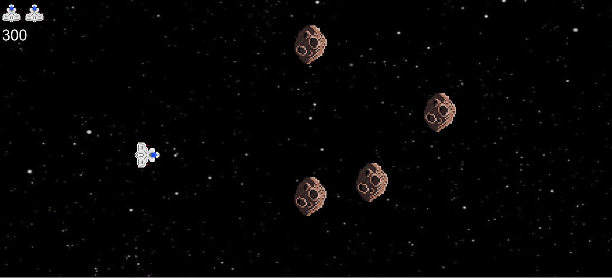

Robert Reddick
Game Designer/Developer

About me
My name is Robert Reddick and my hometown is Brockport, New York. I'm a third year undergraduate student at RIT majoring in Game Design and Development. I also plan on taking on a minor in Psychology. Ever since I was very young I have always loved computer science and have aspired to make my ideas and others ideas come to life. Throughout the years I have gained quite a bit of experience and am comfortable with using C++, Java, Javascript, C#, Python, HTML, and CSS. I am also familiar with using Visual Studio, Monogame, Maya, Unity, and Photoshop CC.
Gallery
Inverse Dungeon

Description: This is a 2D Platformer game where the player is a basic enemy in a dungeon trying to avoid the hero
who is exploring the dungeon and trying to beat the level. The player must retreat into the dungeon and gather other
enemies to help defeat the hero before they reach the end. This game was created using C# and the Monogame Framework.
What I did: Designed and programmed gameplay mechanics, AI used for enemies, and enemy pickups
Technology Used: Created in Visual Studio 2019
What I learned: During this process I learned how to successfully create a game using C# and the Monogame Framework.
I also learned how to develop the mechanics required to make a 2D platformer function, and how to make simple AI by
making enemies track the hero based on their locations.
Challenges Overcame: I overcame some challenges I was originally having with my enemy pickups. I was trying to put a cap
on how many enemies they could spawn but when it reached the cap the player could somehow spawn them infinitely. I found that
this was a miscalculation on how I was handling the array and after some more work I fixed the bug.
Mutation Genesis

Description: This is a 2D Top-down shooter game where the player is a mutant who underwent experiments with
a new virus that gave him special abilities but deformed the rest of the human population leaving him as a
survivor amongst endless waves of the undead. In this game the player fights zombies in wave-based combat and
has access to a variety of abilities which can all be accessed through a shop found in the pause menu. This game
was created using Javascript and PixiJS.
What I did: This was a solo Academic project
Technology Used: Created in Visual Studio Code
What I learned: During this process I learned how to successfully create a game using Javascript and PixiJS.
I also learned how to put together a variety of different Sprites and Animated Sprites to further enhance
the look of my games.
Challenges Overcame: I overcame some challenges I was originally having with my Collisions, I approached this
by deciding what Collision Detection Method would have given me a more accurate response and therefore I found
I needed to implement Bounding Circles instead of Bounding Boxes.
Marvel Character Search

Description: A wep app used for displaying characters from the Marvel Universe. This was made using Javascript and
the Marvel API. It can be used to display a description of the character, as well as comics and events that character
was in. You can also do more general searches by searching by what the character name starts with.
What I did: This was a solo Academic project
Technology Used: Created in Visual Studio Code
What I learned: During this process I learned how to create Web Applications using web APIs and
how to use the APIs to display different information based on selected filters.
Challenges Overcame: Biggest challenge I overcame at first was getting the API itself to work. I found
it pretty difficult at first because I didnt understand the documentation. I overcame this by playing around
with different outcomes until I was finally able to see what the documentation was trying to say and after that
I found it easy to utilize the API.
Asteroids

Description: This Project is a recreation of the classic arcade game Asteroids
but with some differences. It is a 2D Shoot 'em up where the player
must survive waves of obstacles with increasing difficulty.
What I did: This was a solo Academic project
Technology Used: Made in Unity
What I learned: During this process I learned how to successfully create a game in Unity. I also
learned a general process for making shoot 'em up games which gives me the fundamentals needed
to then go and make more advanced features.
Challenges Overcame: The main challenge with this project I had to overcome were my collision responses.
I was having many issues with manipulating my lists and a variety of different errors when it came to
keeping track of bullets and asteroids. I fixed this issue by debugging the algorithm I originally had and
was able to come up with a method that both worked and was error free.
Radioactive Run
Description: This Project is a 2D Platformer and Sidescroller where the player must advance through various levels
in attempt to escape a large wave of radiation. As the levels advance new obstacles become introduced such as breakable
crates, different forms of parkour, enemies, and spikes.
What I did: This was a solo project I did over winter break
Technology Used: Created in Visual Studio Code
What I learned: During this process I learned how to successfully create a platformer using PixiJS and Javascript.
I also learned how to add a scrolling effect to my games.
Challenges Overcame: The main challenge I cam across in this project was the collisions. At first I found it difficult to
make static tiles keep the player from moving through it in case they bumped into it. But through a lot of trial and error with
certain conditions I was able to make it work.
Resume
RESUME PDF